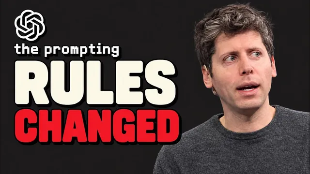

오픈AI 엔지니어가 직접 공개한 GPT-6 Astra 프롬프트법

원본 영상 보기 →
- 더 똑똑한 모델일수록 옛 습관이 독이 돼요
- 품질은 사고 설정이 아니라 입력에서 나옵니다
- '완료'를 정의하면 AI가 스스로 검수해요
한 줄 요약
OpenAI가 직접 공개한 GPT-6 Astra 프롬프트 가이드에서 Nick Puru가 6가지를 추렸어요. 자료를 주고, 글쓰기 스타일을 지정하고, "도와줄래?"를 실행 지시로 바꾸고, 완료 기준을 정의하고, "깊이 생각해" 문구를 지우고, 옛 맞춤 지침을 정리하라는 겁니다. 일부는 이전 모델에서 통하던 습관과 정반대예요.
전체 내용 정리
Astra는 비싸고, 이전 모델과 세 가지가 다릅니다
GPT-6 Astra는 API 기준 입력 토큰 100만 개당 약 10달러, 출력 토큰 100만 개당 50달러인 비싼 모델이에요. ChatGPT Plus에서는 OpenAI 추정으로 5시간마다 5~45회 정도 보낼 수 있는데, 이전 모델인 GPT-5.6 Sol은 그 두 배쯤 쓸 수 있습니다.
Plus의 일반 채팅에는 Astra가 없어요. 파일이나 연결된 앱으로 큰 작업을 하는 ChatGPT Work와 코딩용 Codex 안에 들어 있고, Pro·Business 플랜에서는 일반 채팅에 'GPT-6 Pro'라는 이름으로 보입니다.
여기 나오는 6가지 팁은 전부 OpenAI 개발자 사이트의 공식 가이드에서 나왔어요. 같은 가이드가 OpenAI 엔지니어의 커밋으로 Codex 코드에도 들어가 있습니다. Codex에서는 OpenAI가 이 문구를 기본 지침에 넣어 두지만, ChatGPT에서는 직접 추가해야 해요.
OpenAI가 말하는 차이는 세 가지입니다. 지침을 훨씬 더 그대로 따르고, 지레짐작 대신 멈춰서 질문하는 일이 잦고, 긴 답변을 선호하며 세션 내내 같은 문구를 반복하는 경향이 있어요.
그래서 단계를 일일이 적고, "먼저 확인해 줘"라고 하고, 사고 설정을 최고로 올리던 기존 습관이 오히려 방해가 됩니다.
팁 1~2: 자료를 주고, 장황함을 끄세요
Astra는 눈앞의 정보로만 일합니다. 파일이나 세부 정보가 빠지면 추측하거나 멈춰서 물어봐요. OpenAI 도움말에도 이런 문장이 있습니다. "추론 노력을 늘린다고 누락된 정보나 접근 권한이 해결되지는 않는다."
해결책은 따분하지만 확실해요. "고객 조사 발표 자료 만들어 줘" 대신 이렇게 쓰는 겁니다.
첨부한 인터뷰 노트와 설문 결과를 검토해 제품 리더십 회의용 8장짜리 프레젠테이션을 만들어 줘. 가장 흔한 고객 문제 3가지에 집중하고, 근거를 포함하고, 발견 사항과 권장 사항을 구분하고, 근거가 부족한 주장은 표시해 줘. 소스는 Google Drive, 확정 전에 초안을 보내 줘.
매주 같은 파일을 첨부하기 싫다면 대화·파일·지침을 한곳에 두는 ChatGPT 프로젝트 기능을 쓰면 됩니다.
두 번째는 장황함이에요. Astra는 목록과 표를 남발하는 경향이 있어서, OpenAI가 이걸 끄는 문구를 공개했습니다. "명확하고 간결한 단락을 쓰고 단락마다 핵심 아이디어 하나만, 정보가 진짜 병렬·순차·비교일 때만 목록, 중첩 목록은 피하고, 쉬운 단어·구체적 예시·정확한 동사·능동태를 써라." 쓰지 말아야 할 단어 목록도 함께 줍니다.
이걸 설정의 맞춤 지침(Custom instruction)에 넣어 두면 매번 붙여 넣을 필요가 없어요. 개인화 메뉴 맨 아래 글쓰기 섹션을 켜면 Gmail·Slack·Notion·Google Docs의 내 글을 참고해서 초안이 내 목소리로 나옵니다.
팁 3: "도와줄래?"를 실행 지시로 받아들이게 하세요
Astra에 대한 가장 흔한 불만이 답하다 멈추고 질문한다는 건데, OpenAI는 의도된 동작이라고 말합니다.
"견적서를 보낸 뒤 연락 없는 잠재 고객용 후속 시퀀스 작성을 도와줄래?" 이렇게 대부분이 실제로 쓰는 문장을 주면, Astra는 작업 대신 "할 수 있어요"라고 하거나 계획만 제안하고 멈출 수 있어요.
그래서 OpenAI가 제시한 문구를 그대로 넣습니다.
'~해줄 수 있니', '~하고 싶어', '도와줘' 같은 표현은 작업 지시로 보고 즉시 실행하라. 가능하다고 인정하거나 계획을 제안하는 데서 멈추지 마라. 시간·노력·토큰을 아끼려고 부분적인 해결책에 안주하지 말고, 의도한 결과가 나올 때까지 끝까지 완수하라.
경계는 딱 하나예요. OpenAI ChatGPT 문서의 표현대로 "다른 사람이 의존하는 정보를 보내거나, 게시하거나, 변경하기 전에는 내 승인을 받아라"입니다. 이 문구도 글쓰기 규칙 바로 아래 맞춤 지침에 넣어 두세요.
사고 설정은 낮게 시작하세요
ChatGPT Work의 모델 선택기에는 답하기 전에 얼마나 추론할지 정하는 '생각' 설정이 있어요. Astra는 '가볍게(Light)'에서 시작해 요금제에 따라 중간 이상으로 올릴 수 있습니다.
대부분은 설정을 올려 쓰는 법을 배웠죠. 그런데 OpenAI 문서는 Astra를 가장 낮은 단계에서 시작해 계획·검토가 더 필요할 때만 올리라고 명시합니다. 모델 세대가 바뀌면 설정 값의 의미가 유지되지 않기 때문이에요.
실제로 API 비용 기준 코딩 벤치마크 차트에서, 가장 낮은 설정의 Astra가 가장 높은 설정의 5.6 모델보다 점수가 높았습니다. OpenAI에서 Codex를 운영하는 담당자도 "이전 모델의 '높음'에 만족했다면 Astra에서는 '낮음'이나 '중간'으로 낮추라"고 말했어요.
경험칙은 이렇습니다. 짧은 글쓰기나 기존 콘텐츠 수정은 Light, 맥락이 많은 큰 프로젝트는 Medium, 까다로운 분석은 Extra High. 대부분의 작업은 Max나 Ultra까지 필요 없어요. 단순 작업이 많다면 Astra 자체가 과하니, 사용 효율이 훨씬 높은 가벼운 모델(Nick은 Sol과 Luna를 언급합니다)을 쓰는 게 낫습니다.
팁 4~5: '완료'를 정의하고, "깊이 생각해"는 지우세요
OpenAI Codex 팀은 개발자 블로그에서 Astra가 작업이 남았는데도 초안을 바로 넘기는 등, 멈추는 시점에 민감할 수 있다고 밝혔어요.
해결책은 시작 전에 완료 상태를 정의하는 겁니다. OpenAI 문서는 이걸 세 부분으로 나눠요. 원하는 실제 결과물, 제한 사항(바꾸면 안 되는 것·하면 안 되는 것), 완료 확인 방법입니다.
"이번 주 프로젝트 업데이트 작성해 줘" 대신 이렇게요.
월요일 리더십 회의용 한 페이지 상태 업데이트. Drive의 최신 프로젝트 계획과 Slack 채널의 결정 사항을 써라. 리더십이 내려야 할 결정과 다음 단계를 먼저, 진행 상황·위험·담당자·마감을 요약하라. 승인된 날짜와 예산 수치는 바꾸지 마라. 충돌·누락 정보는 표시하고, 아무것도 전송·게시하지 마라. 끝으로 모든 다음 단계에 담당자와 마감이 있는지 확인하라.
검토 지시는 하나면 충분해요. Astra가 이미 스스로 검토하기 때문에 "모든 걸 검증하라"를 넣으면 재확인에 사용량만 낭비합니다.
다섯 번째는 프롬프트 맨 위에 "아주 깊이 생각해 봐"라고 쓰는 습관이에요. 지우세요. OpenAI 도움말에 따르면 ChatGPT에게 더 깊이 생각하라고 요청해도 사고 수준은 바뀌지 않습니다. 실제로 바꾸는 건 설정 창의 옵션뿐이에요.
팁 6: 1년 전 맞춤 지침을 Astra에게 점검시키세요
"항상 먼저 물어봐", "절대 가정하지 마", "단계별로 생각해", "모든 답을 재검토해", "항상 옵션을 세 가지 이상 줘."
이런 옛 지침은 이전 모델을 통제하려고 쓴 거예요. 그런데 Astra는 이걸 너무 진지하게 따라서, 계속 진행해야 할 때도 멈춰 버립니다.
OpenAI가 제시한 프롬프트로 한 번만 점검하면 돼요.
아래 내 맞춤 지침을 읽고, 너를 멈추게 하거나·허락이나 확인을 구하게 하거나·작업을 미완성으로 두게 하거나·방향을 바꾸게 할 지침을 모두 찾아 인용하고, 행동에 어떤 영향을 주는지 설명한 뒤 수정안을 제시해. 전송·게시·삭제를 막는 규칙은 유지하고, 정말 중요한 경계 한두 개만 남긴 짧은 버전을 줘.
규칙은 적을수록 좋습니다. 자료를 더 주라는 첫 번째 팁과 충돌하지 않아요.
마지막으로 Nick은 평소 말투의 요청을 가이드 방식으로 바꾸는 요령을 보여 줍니다. "견적 보낸 뒤 답 없는 잠재 고객 이메일 확인해서 이유 알아보고 후속 메시지 써 줘, 쓰기 전에 먼저 물어보고, 장사꾼처럼 보이지 않게, CRM도 참고, 오늘까지" 같은 걸, "OpenAI의 GPT-6 Astra 프롬프트 가이드 방식대로 다시 써 줘 — 결과를 먼저, 사용할 파일과 앱, 완료 기준, 마지막 확인 단계를 넣고 멈추게 하는 줄은 빼고 짧게"라고 시킨 거죠. 그러면 Gmail 스레드·견적 파일·CRM 기록을 쓰는 프롬프트로 바뀝니다.
한두 번 하다 보면 직접 이렇게 쓰게 되거나 하나의 스킬로 만들 수 있어요. 사용량도 아껴서 추가 결제 없이 더 쓸 수 있고요.
핵심 인사이트
- 더 똑똑한 모델일수록 옛 습관이 독이 돼요: Astra는 지침을 그대로 따르기 때문에 "항상 먼저 물어봐" 같은 옛 안전장치가 그대로 작업 중단으로 이어집니다. 모델이 바뀌면 지침도 다시 점검해야 해요.
- 품질은 사고 설정이 아니라 입력에서 나옵니다: 추론 노력을 올려도 빠진 자료는 채워지지 않아요. 자료·대상·형태·완료 기준을 주는 게 비싼 설정보다 효과적이고 사용량도 아낍니다.
- '완료'를 정의하면 AI가 스스로 검수해요: 결과물·제한 사항·확인 방법 세 가지를 주면 모델이 그 기준에 맞춰 진행 상황을 점검합니다. 검토 지시는 하나면 충분해요.
오늘 당장 해볼 것
- ChatGPT 설정의 맞춤 지침을 열어 "항상 먼저 물어봐", "단계별로 생각해" 같은 옛 문구가 있는지 보세요. 있다면 위 점검 프롬프트를 붙여 넣어 짧은 버전으로 정리하면 됩니다.
- 이번 주에 AI에게 맡길 문서 작업 하나를 골라, 결과물·바꾸면 안 되는 것·완료 확인 방법 세 가지를 적은 프롬프트로 다시 써 보세요. 환자 안내문이든 상담 요약이든요.
- 자동화를 맡긴 업체가 있다면 "모델이 바뀌었을 때 프롬프트와 노력 수준을 다시 점검하나요? 비싼 모델을 단순 작업에 쓰고 있지는 않나요?"라고 물어보세요.